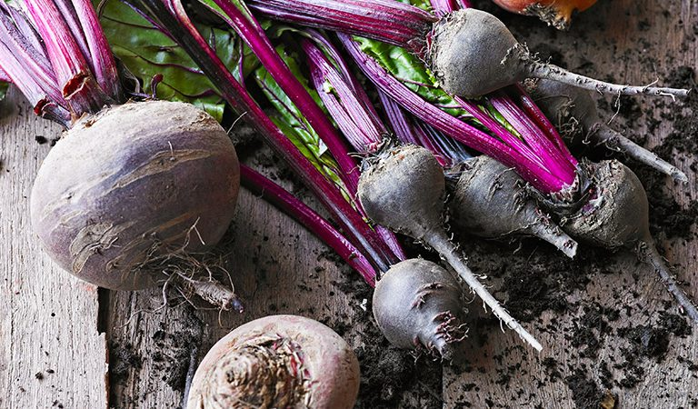
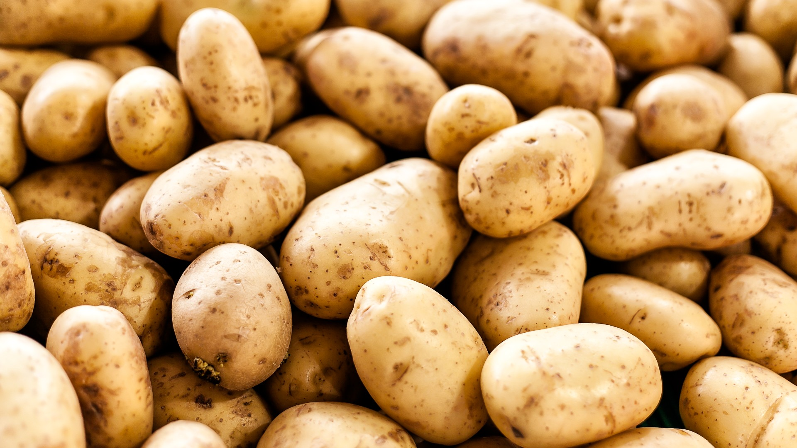

Kale originated in the eastern Mediterranean and Anatolia, where it was cultivated for food beginning by 2000 BCE at the latest.
Tom Robbi
Some deseases
Vegie
Desease
Beet
Beeturia
Carrot
Carroturia


Really informative info
During World War II, the cultivation of kale (and other vegetables) in the U.K. was encouraged by the Dig for Victory campaign. The vegetable was easy to grow and provided important nutrients missing from a diet because of rationing.